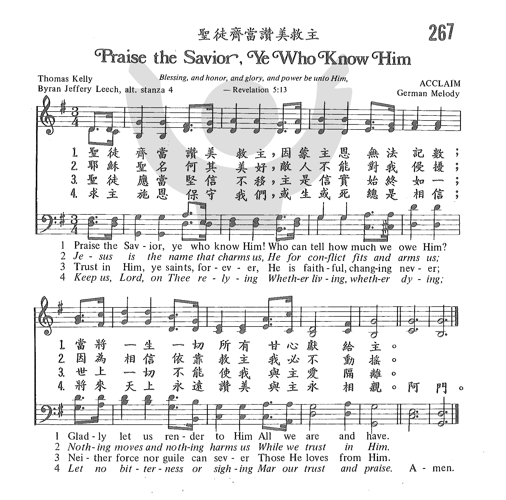

|
|
|
|
1 Praise the Savior, ye who know Him! 2 Jesus is the name that charms us; 3 Trust in Him, ye saints, forever; 4 Keep us, Lord, O keep us cleaving 5 Then we shall be where we would be, |
聖徒齊當讚美救主, 因蒙主恩無法記數; 阿門 |
|
https://www.zanmeishige.com/tab/25635.html?songbook=1&index=267

|
|
|
|
|
-

267 聖徒齊當讚美救主 PRAISE THE SAVIOR, YE WHO KNOW HIM https://youtu.be/vUXHXK5j8wE -
https://youtu.be/c44fcWX5fhM -
PRAISE THE SAVIOR, YOU WHO KNOW HIM (SATB Choir) - Lanny Allen https://youtu.be/sqaB55_J70s
1253
Praise The Savior Ye Who knows Him 信徒齐当赞美救主
| Text: | Praise the Savior |
| Author: | Thomas Kelly |
| Tune: | ACCLAIM |
| Short Name: | Thomas Kelly |
| Full Name: | Kelly, Thomas, 1769-1855 |
| Birth Year: | 1769 |
| Death Year: | 1855 |
Kelly, Thomas, B.A.,

son of Thomas Kelly, a Judge of the Irish Court of Common Pleas, was born in Dublin, July 13, 1769, and educated at Trinity College, Dublin. He was designed for the Bar, and entered the Temple, London, with that intention; but having undergone a very marked spiritual change he took Holy Orders in 1792. His earnest evangelical preaching in Dublin led Archbishop Fowler to inhibit him and his companion preacher, Rowland Hill, from preaching in the city. For some time he preached in two unconsecrated buildings in Dublin, Plunket Street, and the Bethesda, and then, having seceded from the Established Church, he erected places of worship at Athy, Portarlington, Wexford, &c, in which he conducted divine worship and preached. He died May 14, 1854. Miller, in his Singers & Songs of the Church, 1869, p. 338 (from which some of the foregoing details are taken), says:—
"Mr. Kelly was a man of great and varied learning, skilled in the Oriental tongues, and an excellent Bible critic. He was possessed also of musical talent, and composed and published a work that was received witli favour, consisting of music adapted to every form of metre in his hymn-book. Naturally of an amiable disposition and thorough in his Christian piety, Mr. Kelly became the friend of good men, and the advocate of every worthy, benevolent, and religious cause. He was admired alike for his zeal and his humility; and his liberality found ample scope in Ireland, especially during the year of famine."
Kelly's hymns, 765 in all, were composed and published over a period of 51 years, as follows:—
(1) A Collection of Psalms and Hymns extracted from Various Authors, by Thomas Kelly, A.B., Dublin, 1802. This work contains 247 hymns by various authors, and an Appendix of 33 original hymns by Kelly.
(2) Hymns on Various Passages of Scripture, Dublin, 1804. Of this work several editions were published: 1st, 1804; 2nd, 1806; 3rd, 1809; 4th, 1812. This last edition was published in two divisions, one as Hymns on Various Passages of Scripture, and the second as Hymns adapted for Social Worship. In 1815 Kelly issued Hymns by Thomas Kelly, not before Published. The 5th edition, 1820, included the two divisions of 1812, and the new hymns of 1815, as one work. To the later editions of 1820, 1826, 1836, 1840, 1846, and 1853, new hymns were added, until the last published by M. Moses, of Dublin, 1853, contained the total of 765.
As a hymn-writer Kelly was
most successful. As a rule his strength appears in hymns of Praise and in
metres not generally adopted by the older hymn writers. His "Come, see the
place where Jesus lay" (from "He's gone, see where His body lay"),"From
Egypt lately come"; “Look, ye saints, the sight is glorious"; "On the
mountain's top appearing"; "The Head that once was crowned with thorns";
"Through the day Thy love has spared us"; and “We sing the praise of Him Who
died," rank with the first hymns in the English language. Several of his
hymns of great merit still remain unknown through so many modern editors
being apparently adverse to original investigation. In addition to the hymns
named and others, which are annotated under their respective first lines,
the following are also in common use:—
i. From the Psalms and Hymns, 1802:—
Tune Information
| Title: | ACCLAIM |
| Meter: | 8.8.8.5 |
| Incipit: | 55117 12212 33212 |
| Key: | G Major |
| Source: | German Traditional |
| Copyright: | Public Domain |
"PRAISE THE SAVIOR, YE WHO KNOW
HIM"
"Jesus Christ the same yesterday, and today, and forever" (Heb.
13:8)
INTRO.:
A hymn which offers praise to Jesus Christ who is the same yesterday, today, and forever is "Praise the Savior, Ye Who Know Him." The text was written by Thomas Kelly (1769-1855). It was first published in his 1806 Psalms and Hymns Extracted from Various Authors, 2nd Ed., under the heading "Praise of Jesus." Other hymns by Kelly that have appeared in our books are "Crowned with Honor" ("The Head That Once Was Crowned with Thorns"), "Hark, Ten Thousand Harps and Voices," "Sound, Sound the Truth Abroad," "In Thy Name, O Lord, Assembling," and "Look, Ye Saints, the Sight Is Glorious." The tune (Acclaim) most commonly used with "Praise the Savior, Ye Who Know Him" is from an unknown source. The text appeared with another tune that was called a "Traditional German melody" in the 1873 Sacred Songs and Solos edited by Ira David Sankey (1840-1908). However, in the 1903 enlarged edition, it appeared with this melody which had no identification. However, as a result, through the years this tune has also become known as a "traditional German melody" and is so indicated in some books. Sankey may have either arranged or even composed it. Among hymnbooks published by members of the Lord’s church during the twentieth century for use in churches of Christ, the song appeared in the 1963 Christian Hymnal edited by J. Nelson Slater. Today, it may be found in the 1986 Great Songs Revised edited by Forrest M. McCann; and the 1992 Praise for the Lord edited by John P. Wiegand.
The song identifies several aspects of our lives that are related to praising the Lord.
I. Stanza 1 says that we must render to Him everything
"Praise the Savior, ye who know Him! Who can tell how much we owe Him?
Gladly let us render to Him All we are and have."
A. Jesus Christ is worthy of our praise because as our Savior He died for us:
Rev. 5:8-12
B. We may not be able to tell exactly how much we owe Him, but we know that we
owe Him our most precious item, our souls: Matt. 16:26
C. Therefore, we should gladly render to Him all we are and have, loving Him
with all our heart, soul, and mind: Matt. 22:37
II. Stanza 2 says that we must be armed for conflict
"Jesus is the name that charms us; He for conflict fits and arms us.
Nothing moves and nothing harms us While we trust in Him."
A. Jesus is the name that charms us because only in it is salvation found: Acts
4:12
B. Thus, we should look to Him to fit and arm us for our spiritual conflict: 2
Cor. 10:3-5
C. Also, we should stand firm and allow nothing to move us, as was true of
Paul: Acts 20:24
III. Stanza 3 says that we must trust Him
"Trust in Him, ye saints, forever; He is faithful, changing never;
Neither force nor guile can sever Those He loves from Him."
A. Over and over we are urged to put our trust in the Lord: Ps. 37:3-5
B. The reason that we can trust Him is because He is faithful: Rev. 1:5, 19:11
C. Hence, we can be assured that nothing can separate us from His love: Rom.
8:38-39
IV. Stanza 4 says that we must cleave to Him
"Keep us, Lord, O keep us cleaving To Thyself and still believing,
Till the hour of our receiving Promised joys with Thee."
A. To cleave to the Lord means to remain faithful to Him: Rev. 2:10
B. The means by which we do this is to keep believing: 1 Pet. 1:8
C. And we must continue doing this until the hour when we receive the promised
joy of the Lord: Matt. 25:21
V. Stanza 5 says that we shall be rewarded for doing His will
"Then we shall be where we would be; Then we shall be what we should be.
Things that are not now, nor could be, Soon shall be our own."
A. When we receive this final reward, then we shall be where we would be, in
heaven with God: 1 Pet. 1:3-5
B. Then we shall also be what we should be, like Him: 1 Jn. 3:1-2
C. Things that are not now, nor could be, shall be ours then because we will be
in the new heavens and new earth: Rev. 21:1-4
CONCL.:
This is a fairly short hymn which is probably not well known among us because it has been included in very few of our books. However, it makes some good points. It encourages us to give our all to the Lord, fight the good fight of the faith, trust in Him, cleave to Him, and keep looking for our eternal reward. Because Jesus came to make it possible for us to be saved and offers us help in doing all these things, we should surely want to encourage one another to "Praise the Savior, Ye Who Know Him."
https://hymnstudiesblog.wordpress.com/2009/05/07/quotpraise-the-savior-ye-who-know-himquot/